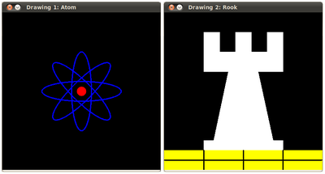

Basic Drawing
Goals
In this tutorial you will learn how to:
- Use cv::Point to define 2D points in an image.
- Use cv::Scalar and why it is useful
- Draw a line by using the OpenCV function cv::line
- Draw an ellipse by using the OpenCV function cv::ellipse
- Draw a rectangle by using the OpenCV function cv::rectangle
- Draw a circle by using the OpenCV function cv::circle
- Draw a filled polygon by using the OpenCV function cv::fillPoly
OpenCV Theory
For this tutorial, we will heavily use two structures: cv::Point and cv::Scalar :
Point
It represents a 2D point, specified by its image coordinates \(x\) and \(y\). We can define it as:
Point pt; pt.x = 10; pt.y = 8;
or
Point pt = Point(10, 8);
Scalar
Represents a 4-element vector. The type Scalar is widely used in OpenCV for passing pixel values.
In this tutorial, we will use it extensively to represent BGR color values (3 parameters). It is not necessary to define the last argument if it is not going to be used.
Let’s see an example, if we are asked for a color argument and we give:
Scalar( a, b, c )
We would be defining a BGR color such as: Blue = a, Green = b and Red = c
Code
This code is in your OpenCV sample folder. Otherwise you can grab it from here
#include <opencv2/core.hpp> #include <opencv2/imgproc.hpp> #include <opencv2/highgui.hpp> #define w 400 using namespace cv; void MyEllipse( Mat img, double angle ); void MyFilledCircle( Mat img, Point center ); void MyPolygon( Mat img ); void MyLine( Mat img, Point start, Point end ); int main( void ){ char atom_window[] = "Drawing 1: Atom"; char rook_window[] = "Drawing 2: Rook"; Mat atom_image = Mat::zeros( w, w, CV_8UC3 ); Mat rook_image = Mat::zeros( w, w, CV_8UC3 ); MyEllipse( atom_image, 90 ); MyEllipse( atom_image, 0 ); MyEllipse( atom_image, 45 ); MyEllipse( atom_image, -45 ); MyFilledCircle( atom_image, Point( w/2, w/2) ); MyPolygon( rook_image ); rectangle( rook_image, Point( 0, 7*w/8 ), Point( w, w), Scalar( 0, 255, 255 ), FILLED, LINE_8 ); MyLine( rook_image, Point( 0, 15*w/16 ), Point( w, 15*w/16 ) ); MyLine( rook_image, Point( w/4, 7*w/8 ), Point( w/4, w ) ); MyLine( rook_image, Point( w/2, 7*w/8 ), Point( w/2, w ) ); MyLine( rook_image, Point( 3*w/4, 7*w/8 ), Point( 3*w/4, w ) ); imshow( atom_window, atom_image ); moveWindow( atom_window, 0, 200 ); imshow( rook_window, rook_image ); moveWindow( rook_window, w, 200 ); waitKey( 0 ); return(0); } void MyEllipse( Mat img, double angle ) { int thickness = 2; int lineType = 8; ellipse( img, Point( w/2, w/2 ), Size( w/4, w/16 ), angle, 0, 360, Scalar( 255, 0, 0 ), thickness, lineType ); } void MyFilledCircle( Mat img, Point center ) { circle( img, center, w/32, Scalar( 0, 0, 255 ), FILLED, LINE_8 ); } void MyPolygon( Mat img ) { int lineType = LINE_8; Point rook_points[1][20]; rook_points[0][0] = Point( w/4, 7*w/8 ); rook_points[0][1] = Point( 3*w/4, 7*w/8 ); rook_points[0][2] = Point( 3*w/4, 13*w/16 ); rook_points[0][3] = Point( 11*w/16, 13*w/16 ); rook_points[0][4] = Point( 19*w/32, 3*w/8 ); rook_points[0][5] = Point( 3*w/4, 3*w/8 ); rook_points[0][6] = Point( 3*w/4, w/8 ); rook_points[0][7] = Point( 26*w/40, w/8 ); rook_points[0][8] = Point( 26*w/40, w/4 ); rook_points[0][9] = Point( 22*w/40, w/4 ); rook_points[0][10] = Point( 22*w/40, w/8 ); rook_points[0][11] = Point( 18*w/40, w/8 ); rook_points[0][12] = Point( 18*w/40, w/4 ); rook_points[0][13] = Point( 14*w/40, w/4 ); rook_points[0][14] = Point( 14*w/40, w/8 ); rook_points[0][15] = Point( w/4, w/8 ); rook_points[0][16] = Point( w/4, 3*w/8 ); rook_points[0][17] = Point( 13*w/32, 3*w/8 ); rook_points[0][18] = Point( 5*w/16, 13*w/16 ); rook_points[0][19] = Point( w/4, 13*w/16 ); const Point* ppt[1] = { rook_points[0] }; int npt[] = { 20 }; fillPoly( img, ppt, npt, 1, Scalar( 255, 255, 255 ), lineType ); } void MyLine( Mat img, Point start, Point end ) { int thickness = 2; int lineType = LINE_8; line( img, start, end, Scalar( 0, 0, 0 ), thickness, lineType ); }
Explanation
Since we plan to draw two examples (an atom and a rook), we have to create two images and two windows to display them.
char atom_window[] = "Drawing 1: Atom"; char rook_window[] = "Drawing 2: Rook"; Mat atom_image = Mat::zeros( w, w, CV_8UC3 ); Mat rook_image = Mat::zeros( w, w, CV_8UC3 );
We created functions to draw different geometric shapes. For instance, to draw the atom we used MyEllipse and MyFilledCircle :
MyEllipse( atom_image, 90 ); MyEllipse( atom_image, 0 ); MyEllipse( atom_image, 45 ); MyEllipse( atom_image, -45 ); MyFilledCircle( atom_image, Point( w/2, w/2) );
And to draw the rook we employed MyLine, rectangle and a MyPolygon :
MyPolygon( rook_image ); rectangle( rook_image, Point( 0, 7*w/8 ), Point( w, w), Scalar( 0, 255, 255 ), FILLED, LINE_8 ); MyLine( rook_image, Point( 0, 15*w/16 ), Point( w, 15*w/16 ) ); MyLine( rook_image, Point( w/4, 7*w/8 ), Point( w/4, w ) ); MyLine( rook_image, Point( w/2, 7*w/8 ), Point( w/2, w ) ); MyLine( rook_image, Point( 3*w/4, 7*w/8 ), Point( 3*w/4, w ) );
Let’s check what is inside each of these functions:
MyLine
void MyLine( Mat img, Point start, Point end ) { int thickness = 2; int lineType = LINE_8; line( img, start, end, Scalar( 0, 0, 0 ), thickness, lineType ); }
As we can see, MyLine just call the function cv::line, which does the following:
- Draw a line from Point start to Point end
- The line is displayed in the image img
- The line color is defined by Scalar( 0, 0, 0) which is the RGB value correspondent to Black
- The line thickness is set to thickness (in this case 2)
- The line is a 8-connected one (lineType = 8)
MyEllipse
void MyEllipse( Mat img, double angle ) { int thickness = 2; int lineType = 8; ellipse( img, Point( w/2, w/2 ), Size( w/4, w/16 ), angle, 0, 360, Scalar( 255, 0, 0 ), thickness, lineType ); }
From the code above, we can observe that the function cv::ellipse draws an ellipse such that:
- The ellipse is displayed in the image img
- The ellipse center is located in the point **(w/2, w/2)** and is enclosed in a box of size **(w/4, w/16)**
- The ellipse is rotated angle degrees
- The ellipse extends an arc between 0 and 360 degrees
- The color of the figure will be Scalar( 255, 0, 0) which means blue in BGR value.
- The ellipse’s thickness is 2.
MyFilledCircle
void MyFilledCircle( Mat img, Point center ) { circle( img, center, w/32, Scalar( 0, 0, 255 ), FILLED, LINE_8 ); }
Similar to the ellipse function, we can observe that circle receives as arguments:
- The image where the circle will be displayed (img)
- The center of the circle denoted as the Point center
- The radius of the circle: w/32
- The color of the circle: Scalar(0, 0, 255) which means Red in BGR
- Since thickness = -1, the circle will be drawn filled.
MyPolygon
void MyPolygon( Mat img ) { int lineType = LINE_8; Point rook_points[1][20]; rook_points[0][0] = Point( w/4, 7*w/8 ); rook_points[0][1] = Point( 3*w/4, 7*w/8 ); rook_points[0][2] = Point( 3*w/4, 13*w/16 ); rook_points[0][3] = Point( 11*w/16, 13*w/16 ); rook_points[0][4] = Point( 19*w/32, 3*w/8 ); rook_points[0][5] = Point( 3*w/4, 3*w/8 ); rook_points[0][6] = Point( 3*w/4, w/8 ); rook_points[0][7] = Point( 26*w/40, w/8 ); rook_points[0][8] = Point( 26*w/40, w/4 ); rook_points[0][9] = Point( 22*w/40, w/4 ); rook_points[0][10] = Point( 22*w/40, w/8 ); rook_points[0][11] = Point( 18*w/40, w/8 ); rook_points[0][12] = Point( 18*w/40, w/4 ); rook_points[0][13] = Point( 14*w/40, w/4 ); rook_points[0][14] = Point( 14*w/40, w/8 ); rook_points[0][15] = Point( w/4, w/8 ); rook_points[0][16] = Point( w/4, 3*w/8 ); rook_points[0][17] = Point( 13*w/32, 3*w/8 ); rook_points[0][18] = Point( 5*w/16, 13*w/16 ); rook_points[0][19] = Point( w/4, 13*w/16 ); const Point* ppt[1] = { rook_points[0] }; int npt[] = { 20 }; fillPoly( img, ppt, npt, 1, Scalar( 255, 255, 255 ), lineType ); }
To draw a filled polygon we use the function cv::fillPoly. We note that:
- The polygon will be drawn on img
- The vertices of the polygon are the set of points in ppt
- The total number of vertices to be drawn are npt
- The number of polygons to be drawn is only 1
- The color of the polygon is defined by Scalar( 255, 255, 255), which is the BGR value for white
rectangle
rectangle( rook_image, Point( 0, 7*w/8 ), Point( w, w), Scalar( 0, 255, 255 ), FILLED, LINE_8 );
Finally we have the cv::rectangle function (we did not create a special function for this guy). We note that:
- The rectangle will be drawn on rook_image
- Two opposite vertices of the rectangle are defined by ** Point( 0, 7*w/8 )** andPoint( w, w)**
- The color of the rectangle is given by Scalar(0, 255, 255) which is the BGR value for yellow
- Since the thickness value is given by FILLED (-1), the rectangle will be filled.
Result
Compiling and running your program should give you a result like this:
